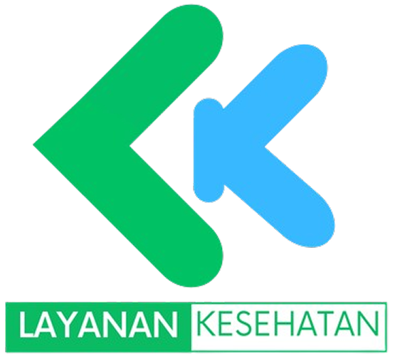
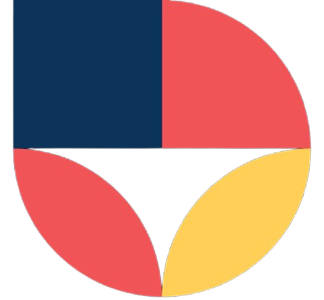
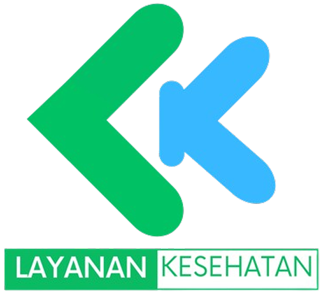
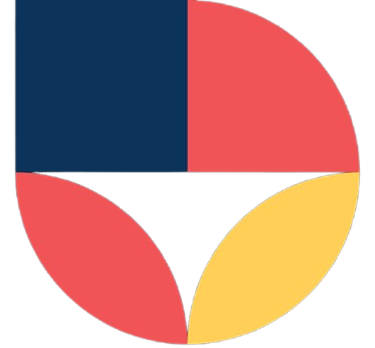
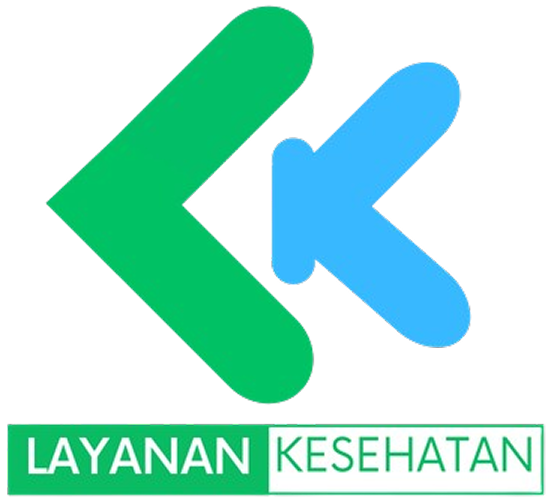
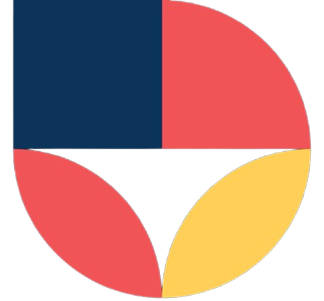

SMKN 8 SEMARANG
SMK Bisa, SMK Hebat, Siap Kerja, Santun Mandiri dan Kreatif


Tujuan
Visi
Terwujudnya lulusan yang kompeten, berkarakter IDOLA(Inovatif, Disiplin, Kolaboratif), dan berwawasan lingkungan.
Misi
Pengembangan Perangkat Lunak dan Gim
Pengembangan Perangkat Lunak dan Gim (PPLG) adalah program keahlian yang mempelajari cara pengembangan perangkat lunak termasuk pembuatan, pemeliharaan, manajemen organisasi pengembangan perangkat lunak dan manajemen kualitas.
Teknik Jaringan Kompter Dan Telekomunikasi
Teknik Komputer dan Jaringan adalah ilmu terkait kemampuan algoritma, pemrograman komputer, perakitan komputer, perakitan jaringan komputer, dan pengoperasian perangkat lunak, dan internet. Teknik Komputer dan Jaringan juga membutuhkan pemahaman di bidang teknik listrik, dan ilmu komputer sehingga mampu mengembangkan, mengintegrasikan perangkat lunak, dan perangkat keras.
Layanan Kesehatan
Kompetensi keahlian Layanan Kesehatan (LK) adalah Kompetensi keahlian yang berfokus pada pendampingan serta perawatan individu dari segi fisik, emosional, sosial dan spiritual dengan metode caring.
Desain Komunikasi Visual
Jurusan Desain Komunikasi Visual (DKV) adalah jurusan yang berfokus pada pengembangan kreativitas dan keterampilan visual untuk menghasilkan komunikasi yang efektif melalui media visual. DKV SMK N 8 Semarang mencakup bidang seperti ilustrasi, fotografi, desain grafis, animasi, dan multimedia.
Pekerja Sosial
Pekerjaan Sosial adalah suatu profesi yang berbasis praktik dan akademis dalam memberikan pelayanan sosial kepada individu, keluarga, kelompok atau masyarakat yang mengalami permasalahan sosial dan mewujudkan eksistensi sosialnya.
Berita
2024-05-03
|
2024-05-03
|